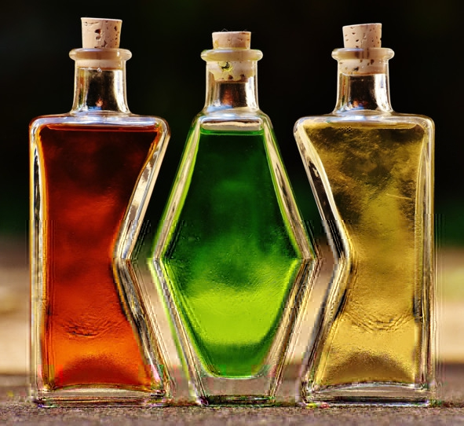

В этой группе находятся алкогольные напитки, которые в силу особенностей технологии и (или) органолептических свойств сложно сопоставить с остальными группами спиртного.
ШнапсШнапс (нем. Schnaps) – название группы германских алкогольных напитков 38—45% об., получаемых путем двойной дистилляции натуральной фруктовой или зерновой браги, приготовленной без добавления сахара, искусственных дрожжей (хлебопекарных или спиртовых) и других ингредиентов. По вкусу шнапс напоминает обычный фруктовый или злаковый самогон, но отличается более выраженным запахом.
Чаще всего шнапс делают из вишни, персиков, сливы, яблок, груш, малины, пшеницы с травами и даже картофеля. Считается, что лучше использовать дикорастущие плоды, поскольку они придают напитку оригинальный вкусовой оттенок и неповторимый аромат. В зависимости от используемого сырья выделяют около 30 видов шнапса.
Впервые шнапс появился в XV веке на территории Германии и Австрии. Большие винокурни начали строить столетием позже – в конце XVI и начале XVII века. Поначалу напиток использовался как лекарство от всех болезней и омолаживающее средство. Спустя некоторое время народ понял, что благодаря опьяняющему эффекту шнапс можно пить просто ради удовольствия. Самогон начали варить не только на винокурнях, но и в частных хозяйствах, используя любое доступное в хозяйстве сырье.
Хотя шнапс считается национальным германским спиртным напитком, центром его производства является Тироль – регион в Восточных Альпах, входящий в состав Австрии. Просто Германия активно популяризирует шнапс в мире, поэтому у большинства туристов напиток ассоциируется именно с Германией. Немцы поставили производство шнапса на поток, в городе Оберкирх даже существует академия, занимающаяся изучением рецептов.
Кроме традиционного существует так называемый «американский шнапс» крепостью 20—25% об., который производят в Северной Америке. На самом деле это ликеры, приготовленные на основе обычного шнапса. К классическим немецким и австрийским напиткам они не имеют отношения.
Шнапс пьют из рюмок небольшими порциями по 20—30 мл. Чтобы почувствовать аромат исходного сырья, фруктовый (вишневый, персиковый, грушевый и т. д.) шнапс подают при температуре 16—20° C. Сначала медленно вдыхают пары спирта и только потом опрокидывают рюмку. Злаковые сорта, не обладающие уникальным ароматом, употребляют сильно охлажденными. Шнапс закусывают фруктами, баварскими колбасками, сосисками и селедкой.
Еще один способ – положить в коньячный бокал дольку фрукта, из которого сделан шнапс, затем налить сам напиток. Перед дегустацией дольку вынуть из бокала и понюхать. Выпить шнапс, закусить фруктом из бокала. В Гамбурге и Ганновере шнапс запивают белым нефильтрованным пивом. Но это сочетание приводит к быстрому опьянению.
АквавитАквавит (aquavit или akvavit) – скандинавский дистиллят крепостью 38—50% об., обычно желтоватого оттенка (цвет варьируется от прозрачного до светло-коричневого), произведенный из зернового и картофельного сырья с последующим настаиванием на фенхеле, тмине, имбире, анисе, других специях и травах. Латинское название Aqua vitae означает «живая вода».
После варки, перегонки и настаивания в дубовой бочке напиток должен совершить путешествие по морю, чтобы быстрее настояться на травах и впитать древесные ноты дуба. Максимум характерных свойств аквавит приобретает именно в условиях естественной морской качки.
Различают два наиболее популярных вида аквавита: датский и норвежский. В Дании производят преимущественно прозрачные напитки с тминным ароматом, на основе которых делают концентрированные горькие настойки с фруктами и специями. В Норвегии делают как раз «морской» аквавит, имеющий янтарный оттенок. Третий мировой лидер по производству – Швеция, где к датскому рецепту добавляют определенные коренья и травяные сборы.
За аквавитом закрепился имидж целебной живой воды, поскольку изначально его принимали как лекарство. Интересный факт: по задумке напиток должен был исцелять от алкоголизма. Было время, когда датчане-пенсионеры получали по 400 мл аквавита каждую неделю в лечебных целях. Но практику лечения водкой пришлось остановить, когда молодежь начала покупать ее у стариков в увеселительных целях. Считается, что скандинавский дистиллят помогает пищеварению, особенно если за столом преимущественно жирные блюда, оказывает благотворное воздействие на организм при кишечных расстройствах, простудных заболеваниях и потере аппетита, а также укрепляет иммунную систему.
Аквавит пьют из стопок. Лучшая закуска к датскому виду – копченая жирная рыба или канапе с сельдью: на черный хлеб кладут сливочное масло, зеленый лук и жирную рыбу. Норвежский вариант закусывают сырным ассорти, салатом из морепродуктов, жарким из мяса или рыбными блюдами.
АнгостураАнгостура (angostura) – крепкая пахучая настойка красно-коричневого цвета, содержащая 45% об. спирта. По характеристикам ангостура относится к биттерам – горьким травяным настойкам, но ее не пьют в чистом виде. Точная рецептура хранится в секрете, однако известно, что в состав входят горечавка, имбирь, дягиль, кора хинного дерева, гвоздика, кардамон и еще более десятка корней, специй и трав.
Биттер ангостура изобретен в 1824 году доктором Йоханом Готтлибом Зигертом как лекарственное средство от жара, болей в желудке и икоты. Микстура пользовалась такой популярностью, что в 1930 году наладили серийное производство. Несмотря на то что этот биттер стал популярен во всем мире, изготавливает его только одна компания (знающая секретный рецепт), расположенная на Тринидаде и Тобаго, – House of Angostura. Настойка получила название в честь венесуэльского города, в котором жил Зигерт, а вовсе не из-за растения ангостуры, которое не входит в состав. Для производства берутся необходимые травы (известно, что доктор Зигерт использовал местные растения, из-за границы ничего не заказывал), измельчаются и три месяца настаиваются на спирту, затем фильтруются.
Ангостуру легко заметить на полках алкогольных супермаркетов: от других напитков она отличается несоразмерно большой этикеткой, выступающей за края бутылки. Есть несколько версий появления такого дизайна. Самая популярная гласит, что за тару и этикетку отвечали два разных человека: сотрудники действовали параллельно, не посоветовавшись друг с другом, и в результате кардинально не совпали в размерах. Менять что-то было уже поздно, так этот дизайн и остался характерной «фишкой».
Этот биттер не пьют в чистом виде, а добавляют в кофе, выпечку, разнообразные блюда. Он стал непременным ингредиентом многих коктейлей, в частности таких известных, как «Манхэттен», «Розовый джин», «Старомодный», «Дьябло». Раньше ангостуру нередко добавляли в джин с содовой (минералкой).
МамахуанаМамахуана (mamajuana) – национальный спиртной напиток Доминиканской Республики, состоящий из меда, рома и (или) вина, настоянного на растительных компонентах: древесине, коре, листьях, травах и специях. Иногда в рецептуру добавляют улиток, моллюсков, морских черепах, игуан, кайманов.
Классического рецепта мамахуаны не существует. У каждого производителя свой состав и пропорции ингредиентов, поэтому цвет, вкус и крепость настойки у всех разные. Традиционные составляющие:
– бехуко – растение, напоминающее лиану, имеет уникальные целебные свойства, используется при укусах ядовитых змей, пауков, скорпионов;
– мукура – трава с ярким чесночным ароматом;
– ункария («кошачий коготь») – для мамахуаны берутся листья, кора и корень этого растения, которое помогает при гриппе и простуде;
– мыльник – растение с терпким вкусом, напоминающим имбирь.
Также в сухих смесях используются кокосовая пальма, базилик, агава, звездчатый анис, лайм, розмарин, коричневое дерево, мелиса и др.
Первые настои начали делать индейцы острова Гаити, шаманы использовали эти напитки для лечения бесплодия у женщин. В начале XVI века остров колонизировали испанцы, они привезли с собой портвейн.
Название Mamajuana появилось благодаря плетеной пузатой бутылке с узким горлышком, которая идеально подходила для приготовления настойки. Испанцы называли эту бутылку Dama Juana или Mama Juana. Они наполняли сосуд травами индейцев и заливали портвейном (позже ромом). В продаже можно найти мамахуану трех видов: сухую в пакетике для настаивания в домашних условиях, в бутылке с корешками, которые многократно заливают вином с ромом для получения новых порций, и очищенный напиток, готовый к употреблению.
Как пить мамахуану:
1. В чистом виде. В Доминиканской Республике эту настойку пьют из рюмок залпом или маленькими глоточками. Температура подачи – 20—23° C. Европейцам больше нравится наливать мамахуану в бокал для виски со льдом. Закуска не предусмотрена.
2. С другими напитками. Мамахуану разбавляют тропическими соками: кокосовым, апельсиновым, лимонным, ананасовым или минеральной водой без газа. Пропорция – 1:2 или 1:3 (одна часть настойки к двум-трем частям сока или воды). В некоторых барах мамахуаной заменяют ром в коктейлях «Мохито» и «Кайпиринья», благодаря чему у напитков появляется оригинальный пряный привкус.
ГрогГрог (англ. grog) – спиртной напиток крепостью 15—20% об., изготовляемый путем смешивания рома с водой и сахаром в определенных пропорциях. В некоторых вариациях кроме вышеупомянутых ингредиентов в состав входит лимонный сок и специи (гвоздика, имбирь, корица, мята). Грог подают в горячем виде. На протяжении столетий он использовался моряками разных стран как средство для профилактики цинги. По согревающим свойствам грог похож на глинтвейн (горячее вино).
Грог появился благодаря адмиралу британского флота Эдварду Вернону (1684—1757 гг.), которого за привычку ходить в непромокаемой накидке (английское название – grogram cloak) моряки называли Старый Грог. Из-за постоянного пьянства адмирал приказал разбавлять водой ежедневную порцию рома (служащим флота в те времена выдавали около 240 мл рома). Со временем для улучшения вкуса в состав начали добавлять сахар и лимонный сок.
ЛиллеЛилле (фр. lillet) – французский аперитив из деревеньки Поденсак на юге Бордо. По европейской классификации относится к разряду ароматизированных вин, бывает белым, розовым или красным, на 85% состоит из вина (Семильон или Мерло), оставшиеся 15% – цитрусовые ликеры из сладких и горьких сортов апельсинов. Купаж смешивают и выдерживают в дубовых бочках, затем фильтруют и разливают в бутылки. Точная технология производства – авторский секрет компании.
Первоначально в список ингредиентов входил также хинный ликер, в те времена напиток назывался «Кина Лилле» (Kina Lillet), от слова «хина», но в 1985 году этот ингредиент был упразднен. Производители осознали, что потребители любят сладкие напитки больше горьких. Однако по старой памяти лилле еще иногда относят к тоникам, а на этикетке указано: «Напиток содержит лучшие вина, смешанные с фруктовыми ликерами и хиной, секретный рецепт продукта передается из поколения в поколение».
Аперитив получил название по фамилии своих изобретателей, братьев Лилле. Виноделы основали собственное производство в Бордо в 1872 году, однако идея производить ликерные аперитивы принадлежала не им, а доктору Керманну. В те времена Луи Пастер как раз совершил великие открытия в области микробиологии, тема медицины была актуальна, люди боялись заболеваний. На этой волне алкоголь вообще и тоники с хиной в частности пользовались успехом, так как врачи объявили их полезными напитками, позволяющими бороться с инфекциями. Братья Поль и Реймонд не растерялись и быстро поняли, что для захвата новооткрывшегося рынка нужно придумать свежую идею. Так в 1887 году появился «Кина Лилле». От других аперитивов напиток отличался белым цветом (остальные были красными), кроме того, изготавливался в знаменитом винодельческом регионе Бордо. В 1920-х годах бренд стал популярен как во Франции, так и за пределами страны – в первую очередь благодаря рекламным кампаниям. Лилле подавали на трансатлантических лайнерах, он «блистал» в высшем обществе Нью-Йорка, входил в состав самых модных коктейлей.
В 1962 году появилась красная версия напитка, а в 1970-х годах из названия пропало слово «Кина». В 1985 году с помощью Института энологии в Бордо рецепт был улучшен: немного снизилось содержание сахара, усилился фруктовый вкус. В том же году производство перешло в руки Bruni Borie, а в 2008 году марку выкупила компания Ricard. Наконец, в 2011 году появился розовый лилле, ориентированный на дамскую аудиторию.
Виды:
– Lillet Blanc – апельсин, карамель, мед, сосновая смола, экзотические фрукты.
– Lillet Rose – красные фрукты, сладкий апельсин, грейпфрут.
– Red Lillet – зрелые черные фрукты, свежие апельсины, ваниль, чуть-чуть пряностей.
Это аперитив, его подают перед едой охлажденным до 6—8° C. Во Франции сочетают со льдом и ломтиком лимона или апельсина, в Германии, Австрии и Швейцарии предпочитают коктейль Lillet Vive – одна часть белой вариации напитка, две части тоника, долька огурца, клубника, листья мяты.
ПоммоПоммо (от фр. Pommeau) – популярный в северо-западной Франции алкогольный напиток, получаемый методом смешивания свежевыжатого яблочного сока с яблочным бренди. Поммо прекрасно сочетается с дыней и сыром с синей плесенью, десертами, шоколадной и яблочной выпечкой.
Две части яблочного муста (неферментированного свежевыжатого яблочного сока) смешивают с одной частью выдержанного кальвадоса. В результате получается напиток крепостью 16—18% об., который оставляют «дозревать» в дубовых бочках на 14—30 месяцев. Крепкий бренди не позволяет соку бродить, а благодаря контакту с деревом поммо приобретает янтарный цвет и изысканный аромат. Во вкусе готового напитка чувствуются тона ванили, карамели, ирисок.
Иногда поммо называют крепленым сидром, однако это в корне неверно, поскольку сидр – продукт брожения яблочного сока, фактически слабое, зачастую газированное яблочное вино. В свою очередь, поммо – настойка яблочного сока на крепком алкоголе, выдержанная в бочках.
Поммо изготавливают на территории трех аппелласьонов Франции – в Нормандии, Бретани и графстве Мэн. С 1991 года этот алкогольный напиток имеет статус названия, контролируемого по происхождению. Это значит, что наносить на этикетку название Pommeau имеют право только производители, находящиеся в указанных регионах и соблюдающие утвержденную на законодательном уровне технологию производства.
Pommeau de Bretagne («Поммо де Бретань»)Аппелласьон охватывает более 300 хозяйств, специализирующихся на выработке сидра. Правила жестко контролируют вид и происхождение яблок, пропорциональное соотношение разных сортов, содержание сахара в соке, качество яблочного бренди, время «старения» в бочках. В бретонских садах растет более 60 сортов горьких, горько-сладких, сладких и кислых яблок, все они могут использоваться для производства поммо.
Изготовление напитка делится на три этапа:
– яблоки собирают, сортируют, моют, разрезают на мелкие кусочки и давят из них сок;
– смешивают получившийся сок с яблочным бренди, выдержанным в дубовой бочке не менее года;
– оставляют в дубовой бочке на срок минимум 14 месяцев (чаще всего – не менее двух лет).
«Поммо де Бретань» обладает сбалансированным горько-сладко-кислым вкусом и насыщенным ароматом. С выдержкой в букете появляются нотки сухофруктов, абрикосов, миндаля, карамели, какао, меда, корицы и лакрицы. При подаче напиток охлаждают до 8—10° C и сервируют с фуа-гра, сыром, десертами, белым мясом, устрицами, морскими гребешками. Смесь сока и яблочного дистиллята может выступать в роли как аперитива, так и дижестива.
Pommeau de Normandie («Поммо де Норманди»)Появился в 1970-х годах, однако был официально признан только в 1986 году, а статус названия, контролируемого по происхождению, получил лишь в 1991 году. Чтобы называться «Поммо де Норманди», напиток должен быть изготовлен из яблок, выращенных в Calvados AOC и минимум на 70% состоять из горьких или горько-сладких сортов. Готовая смесь выдерживается в дубовых бочках не менее 14 месяцев.
Технология производства этого вида поммо ничем не отличается от бретонской вариации (кроме происхождения яблок и вида бренди), его подают с теми же закусками и при той же температуре.
Pommeau du Maine («Поммо де Мэн»)Аппелласьон появился в 2008 году, и пока его продукция мало известна на мировом рынке. Технология такая же, как и в Бретани. Производители обязаны использовать местное сырье – 30 сортов сладких и горьких яблок. После купажирования полученную смесь выдерживают два-три года, в результате напиток получается темнее, чем в других аппелласьонах.
Культура пития подразумевает охлаждение «Поммо де Мэн» до 8—10° C, в качестве закуски обычно подают белое мясо, горячие устрицы, сыр рокфор, фуа-гра, шоколадную помадку и яблочный пирог.
БухаБуха (boukha) – дистиллят из плодов фиги крепостью 36—40% об. Появился в Тунисе, там же в основном и производится. Название Boukha переводится с еврейско-тунисского диалекта арабского языка как «алкогольные испарения». Буху подают в чистом виде и в составе коктейлей. Дистиллят можно разбавлять фруктовым соком, колой или добавлять в десерты.
Напиток изобретен в 1880 году Авраамом Бокобса – тунисцем еврейского происхождения, открывшим чуть позже одноименное производство в Тунисе. Его сын, Жак Бокобса, специально ездил в Нормандию, чтобы отточить технику дистилляции. В 1897 году молодой винодел привез буху на международную выставку в Брюсселе, где, по легенде, ее попробовал и высоко оценил король Бельгии Леопольд II. Крепкое спиртное из плодов фиги было награждено серебряной медалью и пришлось по вкусу многим гостям выставки.
С тех пор и началась история бухи как национального алкоголя Туниса. Когда производством владели уже внуки основателя, в стране началось антисемитское движение, вынудившее семью Бокобса эмигрировать во Францию, там в 1966 году начался выпуск бухи. При этом тунисский винзавод не закрылся и продолжил выпускать напиток для внутреннего рынка. Сейчас французским производством владеет уже шестое поколение Бокобса, а тунисский завод принадлежит государству. Не исключено, что инжирную водку умели гнать задолго до основания официального производства, но документальных свидетельств этому нет.
Сырье для бухи собирают преимущественно в Тунисе и Турции. Сначала мякоть фиги перебраживают, затем отправляют на однократную дистилляцию, затем возможна выдержка в бочках. На выходе получается натуральный и кошерный продукт, который можно пить в любое время и в любых условиях, даже в Песах, так как он не содержит злаков.
Прозрачную буху пьют из небольших стопок охлажденной или комнатной температуры, а также из бокалов для виски со льдом. Выдержанную буху употребляют комнатной температуры. Закусывают напиток несладкими блюдами местной кухни. Тунисцы говорят, что баланс свежести и высокой крепости делает буху настоящим «напитком солнца».
ПейсаховкаПейсаховка (от евр. peisah – «пасха») – еврейский дистиллят из изюма крепостью 37—45% об. двойной или тройной перегонки. Название напитка происходит от праздника Песах (Пасха). В этот день евреям запрещено употреблять и хранить в доме спиртное, приготовленное из зарубежного некошерного сырья. Учитывая, что в Израиле растет только виноград, выбор небольшой. Верующим можно пить лишь вино и бренди, приготовленные под присмотром раввина, и собственноручно сделанный изюмный самогон.
Пейсаховку пьют из рюмок холодной или комнатной температуры. Закусывают традиционными еврейскими блюдами.
МедовухаМедовуха – это слабоалкогольный (5—10% об.) спиртной напиток, получаемый путем сбраживания меда. В зависимости от рецепта, кроме воды в состав еще могут добавляться пивные дрожжи, хмель, вкусовые добавки и другие ингредиенты. Также существует крепкая медовуха, но ее делают не методом брожения, а путем настаивания меда на дистиллятах или спирте. Этот способ позволяет добиться наперед заданной крепости напитка вплоть до 75% об.
На Руси «питьевой мед» считался священным и был неотъемлемым атрибутом многих праздников, но в Средние века о напитке забыли. Второе рождение медовухи пришлось на первые годы советской власти, когда пасечники получали много непригодного для длительного хранения и продажи меда. Ради быстрой переработки пчеловоды делали медовуху с добавлением хлебопекарных дрожжей. Новый слабоалкогольный напиток прижился, его готовили в домашних условиях, используя не только порченный, но и очень качественный зрелый мед, разбавленный водой. Через несколько десятилетий началось промышленное изготовление медовухи. В этом плане прославился город Суздаль Владимирской области, где производство сохранилось и по сегодняшний день.
Медовуху пьют охлажденной до 5—10° C из стаканов и пивных бокалов. Закуска не предусмотрена.
МидусМидус (лит. midus) – одна из древнейших разновидностей спиртосодержащего меда (собственно, название так и переводится – «мед»). Археологи считают, что напитку не меньше 9 тыс. лет, в свое время он был распространен в Индии, Азии, Прибалтике, Германии, Скандинавии, Египте, Греции, Риме и на Ближнем Востоке. В большинстве стран мидус не выдержал конкуренции с пивом и вином, однако в некоторых государствах медовый алкоголь по-прежнему популярен, а в Литве считается национальным спиртным напитком.
Сырьем для мидуса служит липовый или цветочный мед. Сладкое лакомство слегка разводят водой (одна часть воды на две-четыре части меда), кипятят, периодически помешивая и снимая пену. Как только пена исчезает полностью, жидкость снимают с огня, охлаждают, процеживают, сбраживают на пивных, хлебных или винных дрожжах, затем разливают по сосудам. Иногда в процессе или уже при бутилировании добавляют фруктовые соки и эссенции, травы, пряности.
Классический мидус – это обычная медовуха, но с национальным колоритом – при производстве должен использоваться только литовский мед, также изготовители стараются добавлять местные травы.
Исторически хмельной мед использовался в качестве ритуального напитка, повседневного и застольного алкоголя. Мидус уравнивал королей с пахарями, так как его пили все. Достоверно известно, что уже в середине XVI века в Вильнюсе были официальные «медоварни», не считая локальных производств в монастырях, корчмах, частных хозяйствах. В XVIII веке на первый план вышли пиво и водка, а производство мидуса пришло в упадок, который длился около 200 лет. В XX веке пивоварня Beini Sakovas Prienai выпустила четыре вида хмельного меда, которые вызревали пять лет и стоили порядка 8 лат. В 1940 году производство было национализировано и выпуск прекратился.
Дальнейшее развитие мидуса тесно связано с биографией Александраса Синкевичуса (Aleksandras Sinkevicius), пивного технолога из Клайпеды. Он экспериментировал с рецептами и в 1960 году выпустил 1200 бутылок литовского мидуса Dainava («Дайнава»). Напиток имел крепость 10% об., мягкий вкус, янтарный цвет и сразу пришелся по душе потребителям. Сегодня патент на производство мидуса Dainava принадлежит компании Lietuviskas Midus («Литовский мед»).
Из-за отсутствия четких требований к технологии приготовления, закрепленных законодательством, теперь мидусами называют не только продукты брожения меда, но и медовые настойки разной крепости. Различают также «чистый» напиток мидус, фруктовый (с добавлением фруктовых или ягодных соков), домашний (изготовленный в кустарных условиях).
Мидус – очень сладкий и сытный алкоголь, его употребляют в чистом виде из любых бокалов. Хмельной мед не принято охлаждать – наоборот, рекомендуется согреть в ладонях, чтобы почувствовать раскрывшийся аромат. Его не обязательно закусывать, но можно подать фрукты, неострые сыры, орехи, сладости.
КрамбамбуляКрамбамбуля – водка на меду со специями. Имеет приятный слегка сладкий вкус, легко пьется и хорошо согревает в холодную погоду. Можно сказать, что это белорусский аналог глинтвейна или грога, хотя зачастую подается холодным.
Настойка появилась в XVIII веке в Великом княжестве Литовском на территории современной Белоруссии. Считалась напитком знати, поскольку в то время завезенные из Индии специи были очень дорогими. Название произошло от немецкого ликера Krambambuli, который производили в Гданьске в XVIII веке из можжевельника и бренди. На жаргонном языке европейских студентов крамбамбулей называли любое спиртное, постепенно название закрепилось за белорусским медовым настоем.
БузаБуза (боза или боса) – ферментированный слабоалкогольный напиток, популярный в Казахстане, Турции, Албании, Болгарии, Азербайджане, Узбекистане, Румынии и Сербии. В зависимости от страны, буза может изготавливаться муки или соложеного (пророщенного) зерна кукурузы, пшеницы, ячменя, гречи, риса, проса и других злаков. Готовый продукт имеет густую консистенцию, цвет молочного коктейля и сладковато-кисловатый вкус. Содержание алкоголя обычно не превышает 1% об., но бывают сорта 4—6% об. спирта.
Термин «буза» пришел из турецкого языка. Вероятно, образован от двух слов: глагола bozmak («портить», «ферментировать») и прилагательного boz («сероватый», «белесый», «бежеватый»). Вполне возможно, с этим же названием связано английское слово booze – «выпивка, бухло».
Ферментированные напитки из зерна и муки появились еще в древней Месопотамии в IX тысячелетии до н. э. В IV в. до н. э. греческий историк и писатель Ксенофонт описывал технологию изготовления похожего алкоголя во вкопанных в землю глиняных кувшинах. Упоминания напитков вроде бузы встречаются также в шумерских и аккадских текстах. В X в. н. э. буза распространилась по всем странам Центральной Азии, особенно популярна она стала в землях, находящихся под турецким владычеством. Золотой век бузы пришелся на время Османской империи, в тот же период напиток высоко оценили на Кавказе и Балканах. Среди турок буза была популярнее чая и кофе.
До XVI века любые виды зернового варева можно было пить без ограничений, но со временем в напиток стали добавлять опиум (так называемая «Тартар буза»). Это вызвало недовольство властей, и при султане Селиме II (1566—1574) бузу запретили. Вместо нее предлагалось пить безалкогольную вариацию албанского происхождения. В XVII веке ограничения ужесточились: был запрещен любой алкоголь, а торгующие бузой лавки закрыты. Впрочем, со временем ситуация изменилась: известный турецкий путешественник Эвлия Челеби отмечал, что к концу XVII века в Стамбуле насчитывалось не менее тысячи продавцов бузы, причем содержание алкоголя могло доходить до 5—6% (это достигалось длительным брожением).
Напиток был особенно популярен среди солдат: благодаря крайне низкому содержанию алкоголя он не пьянил, но согревал и насыщал. На данный момент буза по-прежнему достаточно широко распространена в Турции и соседних странах. В XIX веке два выходца из Албании, братья Хаци, основали в Стамбуле лавку по продаже бузы. Их напиток, отличавшийся более густой консистенцией, чем народные аналоги, стал брендом и визитной карточкой Турции. Производство работает и по сей день.
Буза производится из разных злаков, поэтому вкус и оттенок могут отличаться. Выбранное зерно проращивают и сушат (не обязательный этап), измельченный солод или муку отваривают до кашеобразной консистенции, протирают, заливают кипятком, охлаждают до теплого состояния, добавляют дрожжи и сахар. Затем смесь отправляют бродить в теплое место, весь процесс занимает не более двух суток. Готовый напиток разливают в бутылки и оставляют «доходить» еще на несколько дней в холоде. Крепость зависит от длительности брожения: чем больше сусло бродит, тем выше градус.
Иногда в бузу добавляют мед, специи, молоко и другие ингредиенты по вкусу. Буза содержит около 12% сахара и 1% протеина. Продукт быстро портится на жаре (скисает), поэтому его нужно хранить только в холодильнике.
Албанский вариант напитка – безалкогольный, единственный разрешенный к употреблению в мусульманских странах – имеет сладкий вкус, подается с жареным нутом, корицей. В Болгарии бузу закусывают горячей баницей – лепешкой из слоеного теста с брынзой.
Одним нравится совсем свежий напиток – не старше двух суток после производства, который славится наиболее «мягким» вкусом, другие любят выдержать бузу в теплом месте несколько часов, чтобы она начала повторно бродить и стала чуть-чуть газированной. В принципе, буза настолько калорийна, что ее не обязательно закусывать. Ферментированное зерновое «молочко» редко варят летом, по большей части это зимнее питье.
ТуакТуак – индонезийский спиртной напиток, получаемый путем сбраживания сахаросодержащего сырья с последующим внесением специй и других добавок для усиления вкуса, также распространен на территории Малайзии. Бывает двух видов: пальмовый и рисовый.
Туак изготавливают в домашних условиях, а не промышленным методом. Выбранное сырье подвергают брожению, затем готовую брагу после фильтрации пьют в чистом виде или перегоняют, получая крепкий туак, он же рисовый или пальмовый самогон. Однако дистилляция проводится крайне редко, поскольку для местных жителей это слишком дорого, в подавляющем большинстве случаев «винокуры» ограничиваются только фильтрацией, поэтому туак еще называют вином или пивом, хотя в нашем понимании это обычная питьевая брага.
Туак обладает желтым или молочно-белесым цветом, это сладковатый и мутный напиток, хорошо освежающий в жару. Интересно, что единой технологии производства нет: в каждом регионе, даже в каждом городе или хозяйстве его готовят иначе, добавляя специи, фруктовые эссенции, сахар и прочие ингредиенты на свой вкус. Главное достоинство туака – дешевизна и доступность. Дорогой «фирменный» алкоголь не всегда по карману населению беднейших стран мира, поэтому пальмовое или рисовое вино долгое время было буквально единственным доступным спиртным напитком. С туаком связаны две традиции: во-первых, его готовят только женщины, во-вторых, если кто-то угощает, отказаться выпить значит серьезно оскорбить человека.
Пальмовый туакДля приготовления этого вида используется сок сахарной пальмы, сброженный дикими дрожжами на жаре. Такое «пальмовое пиво» может стать сырьем для арака (крепкого туака) – самогонки крепостью 20—35% об., которую варят в глиняных чанах и пьют с медом и специями. Возможна также рецептура, при которой на этапе сбраживания добавляют кокосовое молоко, а в массу кладут кусочек дерева рару, чтобы напиток приобрел пикантную горчинку. Островитяне верят, что только честный человек может готовить туак: у лжеца и хитреца он выйдет слишком горьким.
Рисовый туакДля производства требуется рис с высоким содержанием клейковины. Сначала сырье разваривают, затем добавляют дрожжи. Емкость с заготовкой плотно закрывают и оставляют на 2—7 дней. В слегка забродившую массу добавляют сахарный сироп и выдерживают еще около месяца. Наконец, напиток процеживают, придают ему желаемый вкус при помощи специй и пряностей и разливают по бутылкам.
Иногда попадается «фальшивый» туак из кокоса, рисового вина и соды. Поскольку алкоголь не является названием, защищенным по происхождению, и нормы его производства нигде не регламентированы, всерьез говорить о подделке нельзя, но все же рецепт такого туака не считается «классическим».
Традиционно туак пьют из плоских деревянных мисочек, но в рядовой обстановке, не требующей соблюдения этикета, можно увидеть, как малазийские мужчины разливают рисовый алкоголь из пластиковых канистр или бутылок зеленого стекла без этикетки. Туак хорошо закусывать экзотическим фруктом дурианом, про который говорят, что он божественно вкусный, но дьявольски вонючий, также напиток прекрасно сочетается с другими тропическими плодами.